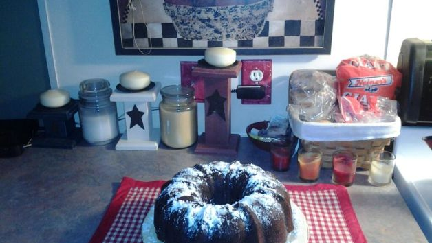

Egyptain Milk Chocolate Pumpkin Cake
Ingredients
- 3 cups all-purpose flour
- 2 1/2 cups granulated sugar
- 3/4 cup brown sugar
- 1 tablespoon pumpkin pie spice or 1 tablesppon apple pie spice
- 1 1/2 teaspoons baking powder
- 1 1/2 teaspoons baking soda
- 1/2 teaspoon salt
- 6 ounces milk chocolate chips (semi-sweet is ok)
- 1 (15 ounce) can pumpkin)
- 3/4 cup melted butter or 3/4 cup margarine
- 6 eggs (slightly beaten) or 6 egg substitute
Directions
- Preheat oven to 350oF.
- Spray a tube pan with a nonstick spray.
- Set aside 1/2 cup of flour in a small bowl.
- Combine the pumpkin, melted butter, and eggs into a large bowl.
- Add the pumpkin mixture to the flour mixture and stir until combined. Then add the chocolate chip mixture. Stir until combined, then pour the batter into the tube pan.
- Bake for 60 minutes, test with wooden toothepick near center of cake to make sure it is cooked.
- Cool pan on wire rack for 15 minutes. Gently remove the cake from the pan and cool for 30 minutes. Cover with powdered sugar, or icing.

Here is a link to the Recipe Website.
Contact Me
luara.chambers@umconnect.umt.edu
The University of Montana.
32 Campus Drive
Missoula, MT 59812